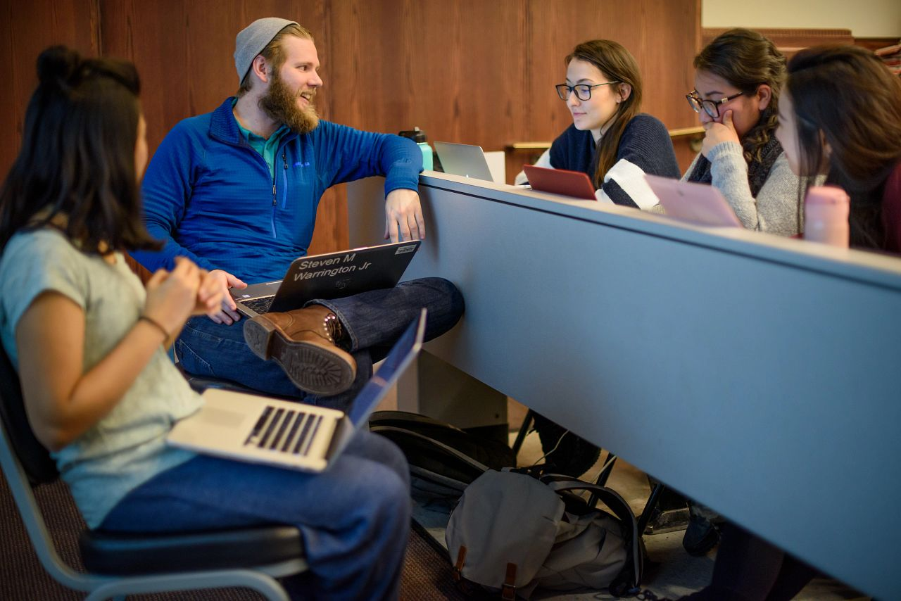

Resume Support
Craft a Resume that Tells Your Story
Your resume is often your first impression—an opportunity to highlight your unique strengths, skills, and experiences to potential employers. Whether you’re starting from scratch or looking to polish an existing resume, these resources are here to help you every step of the way.
UMSI students are in high demand, and a clear, well-organized resume will help you stand out among applicants. On this page, you'll find practical tips, templates, and guides—all tailored to the needs of School of Information students and aligned with employer expectations.
Need feedback? You can always meet with a CDO Career Coach to review your materials.
Resume Writing Made Easy: Steps to Success
- Download a UMSI-Approved Template: Start with a format that works—no need to design from scratch.
- Gather Your Experiences: List jobs, internships, volunteer roles, coursework, and projects most relevant to your goals.
- Write Impactful Bullets: Use action verbs and highlight your skills, results, and unique contributions.
- Tailor for Each Opportunity: Customize your resume for every job or internship you pursue.
- Review and Edit: Proofread for errors, check formatting, and ask for feedback from peers or a career coach.
Resume Formatting Basics
If your resume is poorly formatted, it is difficult for any reader (human or computer) to intake the information and it becomes too much work for the employer to make a decision. Often times, they will just move on to the next candidate. Your overall goal for creating and refresing your resume should be to create a universally scannable document where information can easily be found.
- Most resumes, especially for industry jobs, will be one page. Some academic or non-profit jobs will be open to 2 complete pages for a resume. Federal jobs tend to be 5-6 pages. Please see this guide on USA Jobs for additional information.
- While tempting to get rid of all the white space around the edge, maintain margins for ease of reading and strong visuality.
- We know it can be tempting to use cool design tools like Adobe, Figma, or canvas, however, these documents are often unreadable by an ATS scanner (even when saved as a PDF). We recommend having a copy that is made in a readily accessible and available tool like Microsoft Word or Google docs. In addition, you should always save as a PDF to maintain formatting.
- Formatting should be consistent across and between sections.
- Use a standard simple font that is 10-12pt in size. Typical fonts include: Arial, Calibri, Cambria, Garamond, Helvetica, etc. We recommend starting with just black text, however, if you are using color make sure it is a purposeful choice.
- Lastly, your resume should not contain any pictures or images.
More resume formatting tips can be found at our Resume Refresh presentation.
Tips on Adding Course Projects to Your Resume
Course projects are incredibly valuable to your career goals. Course projects can amplify your work and academic experience to make your stand out to an employer by giving them evidence of applicable and hands on work which can amplify your resume to help you market yourself as a the best candidate for the job. Below are a few tips on what to mention when including course projects in your resume.
- Demonstrate Skills: Clearly state the skills you developed or utilized during these projects. Whether it's technical skills (programming languages, software proficiency), analytical skills, problem-solving abilities, teamwork, leadership, or project management, highlight them concisely.
- Problem-Solving and Innovation: Discuss how your projects involved innovative solutions or required creative problem-solving. Employers value candidates who can think critically and find novel ways to address challenges.
- Teamwork and Collaboration: If the projects involved teamwork, explain your role within the team, how you collaborated effectively, and how your contributions helped achieve project goals.
- Communication and Presentation: If applicable, mention any presentations, reports, or documentation involved in presenting project findings. Highlight your communication skills and ability to convey complex information clearly.
- Adaptability and Learning: Describe any instances where you adapted to changes or learned new skills during the course of the project. Employers value individuals who can quickly adapt to new environments and continue learning.
- Relevant Technologies or Tools: Specify any tools, technologies, or methodologies you used in these projects. This showcases your familiarity with industry-relevant tools and demonstrates your ability to apply them in practical settings.
- Impact and Results: Quantify the impact of your work whenever possible. For instance, mention if your project contributed to process improvement, increased user engagement, cost reduction, etc.
- Showcase Initiative: Highlight any instances where you took initiative, led a project, or went above and beyond the requirements of the assignment. This demonstrates your proactive attitude and motivation.
Want to learn more? Learn more about how to communicate course projects to employers.
Resume Resources
-
UMSI Resume Guide and Rubric
Comprehensive UMSI guide including tips, formatting rules, and sample accomplishments. -
Writing Effective Resume Bullets
Learn how to describe your work and impact in ways employers notice. -
Resume Rubric
Evaluate your resume using the same criteria as UMSI’s Career Development Office. -
Using AI to Support Your Career Development: Prompt Resource Guide
Learn how to use generative AI and write effective prompts to aid in crafting your resume. -
Application Materials: Workshops and More
Attend a Resume Refresh workshop, review video tutorials, or access additional templates.
Ready for review? Book a resume review appointment with a CDO Career Coach.
Resume FAQ
-
How long should my resume be?
For most UMSI students and new grads, one page is best. More experienced professionals may require two pages. -
Do I need a different resume for each application?
It’s wise to tailor your resume to the requirements and keywords of each opportunity. -
Is it okay to include coursework or student projects?
Absolutely! UMSI coursework and projects are valued by employers, especially if they show relevant skills and impact. -
How often should I update my resume?
Update your resume every semester, after major projects, or whenever you gain a new role or responsibility.